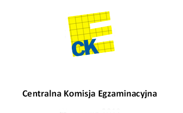

Czas trwania egzaminu:
Wyjaśnij pojęcia (3 pkt):
Wykonaj kształty (2 pkt)
Wykonaj ikonę CKE. Zapisz grafikę jako PNG w rozmiarze (4 pkt grafika + 1):

Grafika wektorowa przewiduje 6 prymitywów. Wymień je (2 pkt).
Wykonaj płytę CD. Uważaj na gradient (3 pkt).
Wymień sposoby inicjowania animacji (2 pkt)
Zapisz atrybut "rozpoczęcie animacji": (3 pkt)